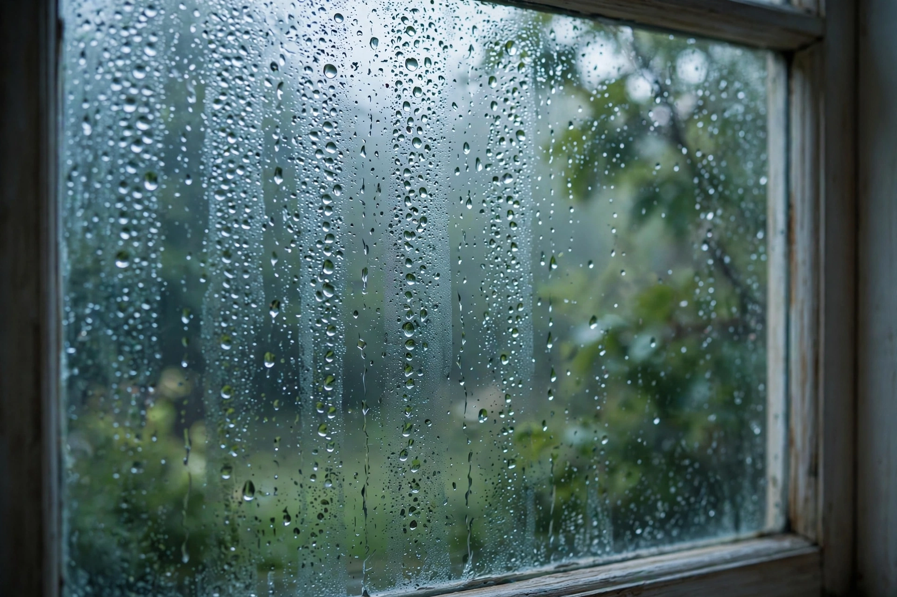

Relative humidity
| Relative humidity | |
|---|---|
| Symbol | RH or φ |
| Unit | Percent (%) |
| Definition | Ratio of partial pressure of water vapour to equilibrium vapour pressure |
| Measured by | Hygrometer, psychrometer |

Relative humidity (RH) is the ratio of the partial pressure of water vapour to the equilibrium vapour pressure of water at a given temperature. Relative humidity depends on temperature and the pressure of the system of interest. The same amount of water vapour results in higher relative humidity in cool air than warm air. A related parameter is the dew point.
Definition
Relative humidity is normally expressed as a percentage; a higher percentage means that the air–water mixture is more humid. At 100% relative humidity, the air is saturated and is at its dew point: water vapour will condense to form dew or fog. Because the saturation vapour pressure rises strongly with temperature (roughly doubling for each 10 °C rise, following the Clausius–Clapeyron relation), air heated without adding moisture experiences a sharp fall in relative humidity — a key principle in building physics and HVAC design.
Measurement
Humidity is measured with a hygrometer. The traditional psychrometer uses paired wet-bulb and dry-bulb thermometers: evaporation cools the wet bulb in proportion to the dryness of the air. Modern capacitive and resistive electronic sensors dominate weather stations and consumer devices. Hair hygrometers, exploiting the lengthening of human or animal hair with humidity, are still used in some instruments.
Significance
Human comfort and health
High relative humidity reduces the effectiveness of sweating, raising apparent temperature (see heat index) and the risk of heat stress. Indoor humidity below about 30% can dry mucous membranes, while sustained levels above 60% encourage dust mites and mould growth. Many guidelines recommend keeping indoor relative humidity between roughly 30% and 50%.
Buildings and materials
Moisture control in buildings depends on relative humidity: condensation within walls can cause rot and mould, and museums and archives control RH tightly to protect artefacts, as fluctuations swell and shrink wood, paper and ivory.
Climate and weather
Near the surface, average relative humidity is highest in equatorial and coastal regions and lowest in subtropical deserts and continental interiors. Water vapour is the most abundant greenhouse gas, and humidity feedbacks are central to climate sensitivity: warmer air can hold roughly 7% more moisture per degree Celsius, intensifying the hydrological cycle.